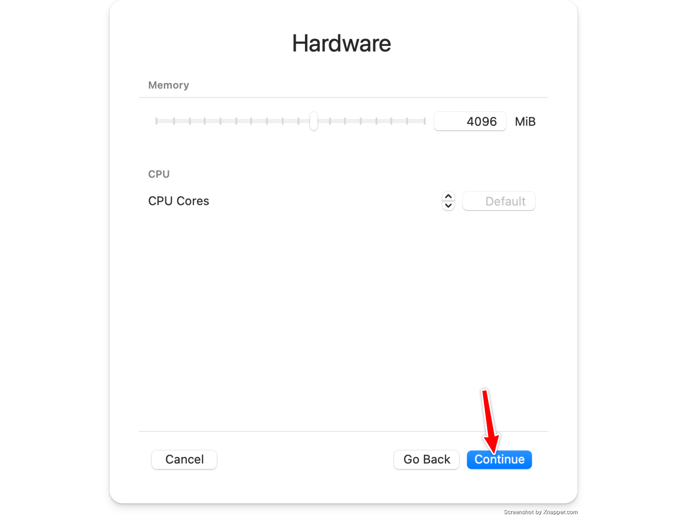
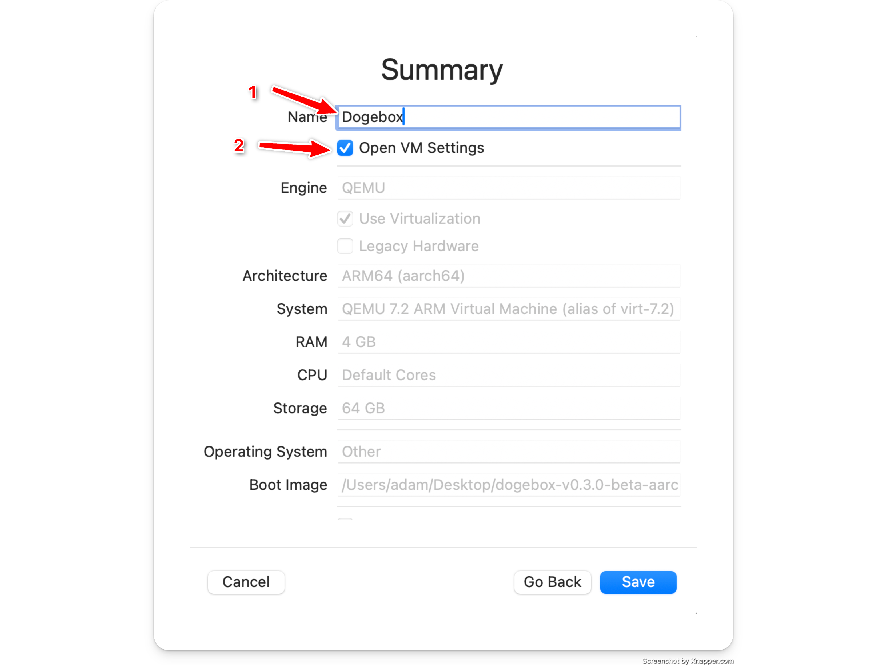
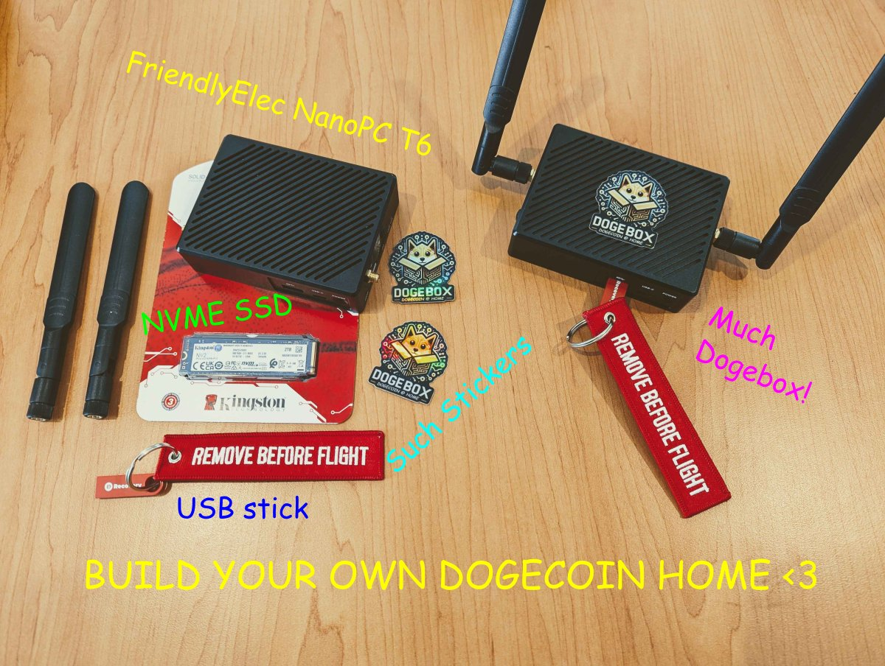
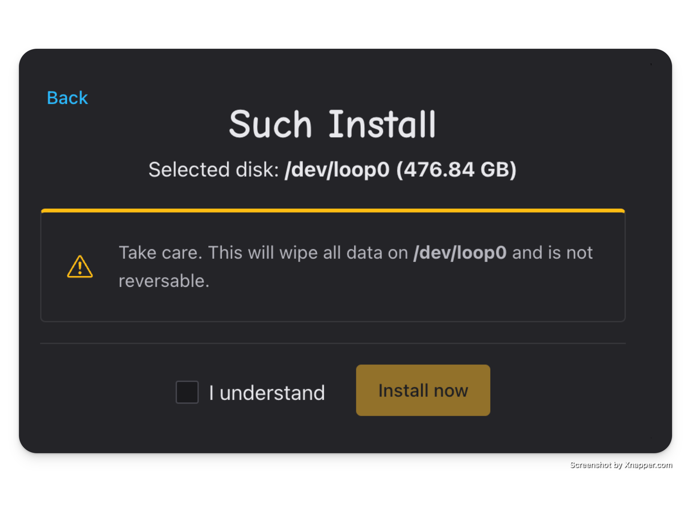
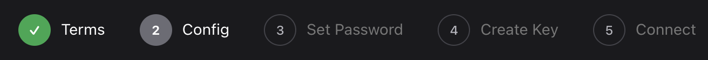
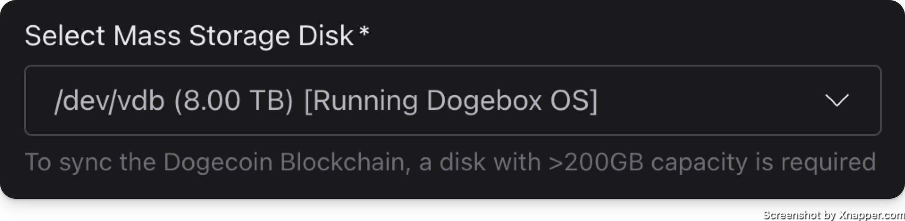
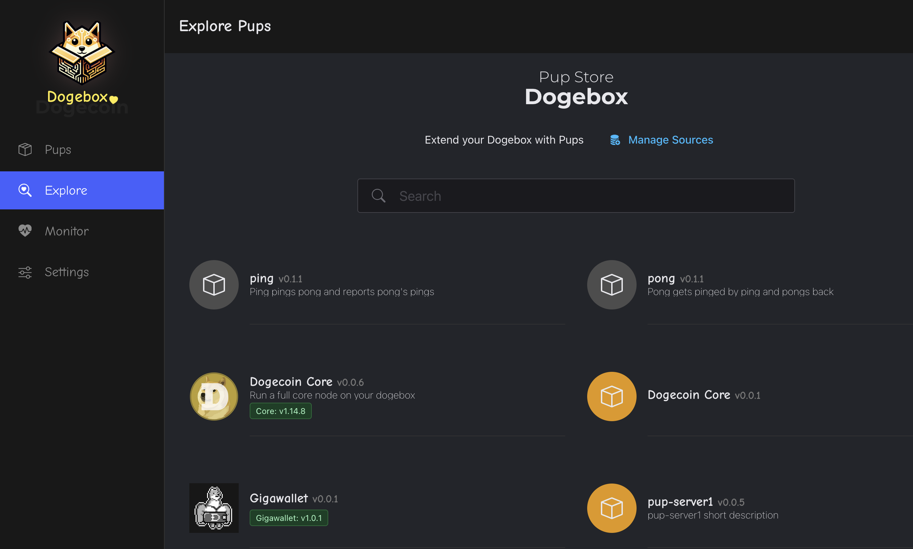

What is the Dogebox project?
Dogebox is a Linux server distribution and custom server software built specifically to meet the needs of the Dogecoin community.
The objective: to provide a decentralised platform for the development, distribution and self-hosting of software (we call them PUPs) that will bring real utility to the Dogecoin ecosystem and drive adoption.
>>> Join the Dogebox Developer Discord for Help <<<
What's in the box?
Dogebox is a locked down custom configuration of NixOS Linux which includes a number of Dogecoin specific services that combined deliver the Dogebox UI, the DRE (Doge Runtime Environment), Pup management and secure interaction between Pups.
Dogeboxd - Pup management and runtime orchestration
https://github.com/dogeorg/dogeboxd
Dogebox runs a daemon process 'dogeboxd' which provides installation and orchestration of Pups which are run in isolated containers via Linux Systemd / Linux Namespaces.
Dogeboxd manages inter-pup communications via nix-config rules, exposing TCP ports between containers, and proxying REST APIs as required for Pups to communicate with their dependencies, in accordance with their manifest rules.
This is all done in aid of providing an easy to use platform for Dogecoin users that can provide a secure runtime environment for Dogecoin adventurers who are not Linux administrators.
DPanel - Admin UI
https://github.com/dogeorg/dpanel
The Dogebox is managed via a convenient Web control panel that allows the user to install new Pups from the community, determine how they can communicate with eachother and the network, and then ensure they are running and monitored.
DKM - Doge Key Manager
https://github.com/dogeorg/dkm
The DKM provides cryptographic authentication to the Dogebox and Dogecoin key management for Pups in a manner that lets the user recover and control any keys generated by pups, via the use of hierarchical deterministic keys.
Each Pup installed is issued a 'delegated' child key from the Dogebox user's master key. Pups can then use these keys to derive further child keys for use as pay-to addresses or anything else such as providing full wallet functionality, online shops, etc.
DKM creates an encrypted master key and generates (derives) private-public keypairs for pups and other parts of the DogeBox ecosystem.
Keys are encrypted at rest with the DogeBox password and stored on disk.
Passwords are first hashed using Argon2 memory-hard KDF (Argon2id variant) with parameters time=3, memory=64M, threads=4 and the BLAKE2b hash function as recommended in RFC 9106.
The password-derived hash is then used to encrypt the master key with ChaCha20 cypher and Poly1305 Authenticated Encryption (AE) scheme.
Keys in DKM are only in memory while they are actively being used for Authentication or key derivation.
Dogenet - Multi-protocol gossip network
https://github.com/dogeorg/dogenet
DogeNet is a service that implements the Doge Gossip Protocol, which is a multi-channel protocol for communicating among Dogenet nodes.
It is a foundational piece for future experimental protocols (Project Sakura), and provides useful side-channels for Dogecoin adjacent projects to communicate without polluting the Dogecoin blockchain, where simple peer-to-peer communication is sufficient.
DogeNet builds a database of active DogeBox nodes, which is used to find peer nodes to connect to. DogeNet maintains a connection to at least 6 peers at all times (more if running novel protocol-handlers that require connecting to other participating nodes.)
DogeNet exposes a local UNIX-domain socket for custom Protocol Handlers to connect to DogeNet and send/receive messages on any channels they're interested in.
Channels are assigned to different protocols; for example, DogeNet nodes announce their presence and public address on the ''Node' channel; DogeBoxes can optionally announce an identity profile on the ''Iden' channel, for display on the DogeMap and for use in future social pups.
Getting Dogebox
There's a few options for running a Dogebox:
Pre-Installed Hardware

The Dogecoin Foundation is currently selling hardware that comes pre-installed with Dogebox, these are available for purchase from the official Dogebox website
DIY Hardware
Want to run Dogebox on your own hardware? Click here & let's go!
Unsure what to use? We suggest the FriendlyElec NanoPC-T6, with official dogebox support and plenty of CPU/RAM/HDD you can't go wrong. Check out purchasing T6 hardware for more details.

Virtual Machine
Want to test Dogebox in a VM? Check out the table below to figure out how.
| OS | Supported VM | Instructions |
|---|---|---|
| Windows | Virtualbox | Here |
| MacOS (Intel) | Virtualbox | Here |
| MacOS (Apple Silicon) | UTM | Here |
| Linux | Virtualbox | Here |
Bare Metal
- UEFI Support
>1GBRAM>50GBDisk Space (>300if you want to sync the blockchain)
It is possible to install Dogebox to one hard drive and use another as your "storage" device. This is configured during initial setup.
- Download the ISO image for your machine architecture from the Dogebox releases page
- Write the ISO to a USB drive
- Boot from the USB drive and proceed with installation, following instructions here
Virtual Machines
Download images
Head over to https://github.com/dogeorg/dogebox/releases and download the appropriate image for your VM platform.
Other Virtual Machines
Any virtual machine that supports x86_64 OVA or ISO images should work.
Please consider the following:
- Network Bridged Mode is required, so you can visit the Dogebox DPanel in your web browser. When you create your new virtual machine, configure this in the settings (or command-line options). See screenshots above for an example.
- Your virtual machine must support a display, so you can log in and find out its IP address. Again, see screenshots above for an example.
QEMU
Instructions for QEMU can be found at the bottom of this page.
First run
Click the Play button to start your Virtual Machine. Follow steps 5 though 7 described above for VirtualBox:
- Start your VM and wait for it to boot,
- Login and find out your IP address,
- In a web browser, visit the DogeBox Setup page, as described above.
Restart your Dogebox
When the DogeBox Setup page asks you to Restart your Dogebox:
- Go back to the Virtual Machine login window and enter command
sudo shutdown -h nowto shut down cleanly. - Wait for the window to clear - it becomes a big play button
- Switch back to the main UTM window
- At the bottom of the Virtual Machine's info page, find the CD/DVD drop-down (you might need to scroll down)
- Click on it and choose
Clearso it becomes(empty)- this removes the installer image. - Then, click the Play button to launch the VM again.
Shut Down your Dogebox
If you want to stop your DogeBox Virtual Machine:
- Go back to the Virtual Machine login window.
- Log in if necessary with username:
shibeand password:suchpass - Enter command
sudo shutdown -h nowto shut down cleanly.
It's a good idea to do this every time you want to shut down the DogeBox, otherwise stopping it with the Stop button risks corrupting the virtual disk image, and you would have to delete the virtual machine and start over.
Virtualbox
-
Download Virtualbox, or another OVA compatible VM launcher.
-
Import the OVA image by selecting the file you downloaded from the latest release.

- Ensure the VM has sufficient RAM for the software you plan to run on the Dogebox.

- Once imported, click 'Settings' and configure your Virtual Machine's network to use 'bridged mode'. This is required so you can visit the Dogebox DPanel in your web browser.

- Launch the VM. This may take up to 10 minutes depending on your internet connection, to configure itself initially, grab a cuppa.

- Login with username:
shibeand password:suchpass, then runip addr, it may look different to this but skip the first loopback interface 'lo' and look for another interface, then look for the lineinetwith your IP address, in this example:192.168.1.5
- In a web browser, visit http://your_ip_address:8080 to visit the setup experience and configure your dogebox. In this example it would be
http://192.168.1.5:8080but your IP address will be different.
UTM
Downloading
Visit the Dogebox releases page, and downloaded the latest asset ISO image for the aarch64 architecture.
Installing
Create new Machine

Select Virtualise

Select "Other" operating system

Select the downloaded aarch64 ISO file

Set the amount of ram you want
The default of 4096mb is typically fine.

Set the amount of storage you want
UTM uses sparse disk files, so a 500GB disk will not actually take up 500GB on your hard drive.
If you wish to sync the blockchain in this VM image, ensure you set this to over 300GB.

Skip any shared directory configuration

Name your VM image and open settings

Configure Bridged networking
- Select
Networkon the lefthand side. - Change
Network ModetoBridged (Advanced)

Save & Launch
Setup
Please see Initial Setup
Generic VM
Any VM software capable of booting from an ISO image should suffice.
We currently release x86_64 and aarch64 (ARM64) images, other architectures may work if you manually build your own bootable ISO image.
A few things to note:
- The ISO images currently only support UEFI boot.
- We recommend
>4GBof ram, but as low as1GBshould suffice. - A couple of cores should be the minimum, especially if you plan to install a Core node.
- A way to directly hit your VM on specific ports is necessary.
- Bridged mode is the easiest, but some VM software let you forward specific ports. If you do this,
8080and3000are necessary for the Web UI to work, along with other ports specified in Forwarding Ports.
- Bridged mode is the easiest, but some VM software let you forward specific ports. If you do this,
FriendlyElec NanoPC-T6
Beta release of the Dogebox OS built specifically for the FriendlyElec NanoPC-T6.

Things to note / What does not work
These things will all be fixed in a following release. This release is for tinkerers that are happy to re-flash a couple of times before a stable T6 release.
- The T6 bootloader only supports booting from microSD cards that are 32GB and smaller (SDHC, not SDXC)
- Ethernet is required to be plugged in at first initial boot.
- The OS still has a hardcoded username and password:
shibeandsuchpass. Please do not deploy your box on any unsecured network, as anyone may be able to login to your T6. This will be rectified in the next release with proper SSH key management. - WiFi configuration during initial setup is currently not supported.
Download images
Head over to https://github.com/dogeorg/dogebox/releases and download the latest dogebox-v0.x.x-beta-T6.img.gz file.
Decompress the downloaded file
The Image file is compressed with gzip to save on bandwidth. This compressed file, however, must be decompressed to be flashed to the microSD card in order to be able to boot from it, when plugged into the dogebox hardware.
How to get the image to the microSD card
The file you've downloaded is an filesystem image file. This means you have to copy the data over to the microSD card in a specific manner to make sure the data is able to be read when the machine boots.
To do this we recommend using a image flashing tool such as Balena Etcher or Rufus
How to flash microSD using Balena Etcher
- Open
Balena Etcher - Click
Select iamgeand navigate to the location of your downloaded and decompressed.img - Click
Select Driveand choose the microSD card - Click
Flashand wait for the flashing process to finish
How to flash microSD using Rufus
You can easly flash using the OpenSource Rufus Tool that you can get the latest version here for your operating system: https://github.com/pbatard/rufus/releases
- Open
Rufus - On
Deviceselect your microSD card - Click on
Selectand Choose the file you downloaded and decompressed.img - Click on
Startand wait a few minutes to finish
How to flash microSD using dd if=
- Download the T6
.img.gzfile attached to the release. - Uncompress the image so you get the raw
.imgfile. On windows you may need to download 7-Zip to uncompress the image. - On Linux & MacOS, use
dd if=to write the file to the raw microSD device. - On Windows, use a raw image disk writer UI. There are multiple available, e.g. Rufus.
How to Setup
With a monitor and keyboard available
- Insert the microSD card with image flashed.
- Ensure you have an ethernet cable plugged into your T6 box.
- Plug in a HDMI screen, make sure it's plugged into
HDMI1. - Plug in a keyboard.
- Plug power in.
- Wait until the box finishes booting, this could take anywhere from 2 to 10 minutes.
- Once finished, login with the username
shibeand the passwordsuchpass. - Enter command
ip addrand take note of your IP address.- Ignore the
lo: <LOOPBACK>section, look for another one. - Look for a line that starts with
inetfollowed by your IP address, in this example192.168.1.5. - See the screenshot below.
- Ignore the
- In a web browser, visit
http://your_ip_address:8080to start configuring your dogebox.- In this example, it would be
http://192.168.1.5:8080but your IP address will be different. - This will load the DogeBox Setup page.
- In this example, it would be
Without a monitor and keyboard available
- Insert the microSD card with image flashed.
- Ensure you have an ethernet cable plugged into your T6 box.
- Plug power in.
- Wait until the box finishes booting, this could take anywhere from 2 to 10 minutes.
- In a web browser, visit
https://dogebox.local:8080to start configuring your dogebox.- This will load the DogeBox Setup page.

Restart your Dogebox
If you choose to install DogeBox OS on the internal eMMC storage (recommended), the setup page will ask you to restart your DogeBox.
- Go back to the hardware T6 keyboard, and enter command
sudo shutdown -h nowto shut down cleanly. - This also works if you want to shut down your DogeBox at any time (you may have to log in first)
- It's a good idea to do this every time you want to shut down the DogeBox, otherwise pulling the plug risks corrupting the eMMC storage or SD card, and you might have to wipe your DogeBox and start over (often it will recover, but not always)
Shut Down your Dogebox
Descibed above under Restart your Dogebox
Dogebox Initial Setup
On the first boot of your dogebox, the system will be available on https://dogebox.local:8080/.
In case your network blocks mDNS, which can happen in some cases use the following methods to determine the IP address of the machine.
Determine your IP address
There's a couple of ways to do this:
Access to the machine
If you have access to the machine, you can login with the username shibe, and password suchpass.
Run the command ip addr, which should give you a list of IP addresses. Ignore the first lookback device lo, and look for an IP that starts with 10., 192.168., or 172.16..

No access to the machine
If you've started your machine without a display, or no keyboard, you'll need to determine the IP address using a different method. The easiest way to do this is to login to your router and look at the list of DHCP leases it has given out.
Unfortunately this is out-of-scope for this documentation, but a quick google of your router model and "list devices" should suffice.
Visit setup UI
Once you've got your IP address or confirmed the box is available on dogebox.local, continue setup by visiting the Web UI. This is hosted on port 8080.
eg. If your IP address is 192.168.0.2, you should visit http://192.168.0.2:8080 in your browser.
See Disk Installation to continue.
Disk Installation
The first time you boot your dogebox, you'll be presented with one of the following prompts:

If you see this, you're able to continue booting from the current media. If you're satisfied with what DogeboxOS is installed on, you can hit "Stay" and continue following the setup instructions here.

If you see this one, you must install DogeboxOS onto a separate device, as your current boot media isn't compatible with some reason (maybe it's marked as read-only?)
Keep following below.
Select your Disk
Now is the point where you should select the disk you want to install to.
Currently there are some restrictions on which drives show up:
- They must be unmounted, and contain no existing partition table.

Confirm wipe
Once you've selected your disk, you need to confirm that all data on the selected disk will be destroyed

Installation
Sit back and wait for installation to complete, this may take up to 10 minutes.

Reboot
Once you're done, you need to power off your Dogebox and restart it to exit setup/recovery mode.
When rebooted, see Setup Configuration for next steps.

Configuration
Terms

This one is pretty simple. No options here, just you confirming you agree to some things.
Config

Here we have some basic system configuration options.
Device Name
This is what your devices hostname will be set to. The value chosen here will determine the mDNS address you will be able to access the WebUI with later on. E.g. if you choose my-dogebox then you'll be able to access the WebUI at https://my-dogebox.local:8080/.
Keyboard Layout
If you are planning on using a keyboard (rather than SSH) to interact with your Dogebox, you should select your keyboard layout here so that when you press a it actually types a :)
Storage Device
Here is where you configure your storage device. By default it will select the disk that you have DogeboxOS installed to.

If you have an alternative (maybe larger?) disk that you wish to pick, select it here. This will be used for all pup storage and other Dogebox configuration things. This will require you to confirm that everything on this disk will be destroyed.

Set Password

This is where you will set your access & encryption password. Currently, we do not restrict what your password can be, so ensure that it is secure, because it will be protecting your whole Dogebox!
Create Key

Clicking Generate will create a new HD private key that will be the root of everything for your Dogebox.
Once done, it will pop up the seed phrase for this key.

Network

Here you can select how you want your Dogebox to connect to your network.
You can also enter an SSH public key here, if you have one. This will enable the SSH server on your Dogebox as an alternative method to access.
Hitting Connect here will start configuring your box, and might take a little while!
Done!

If you got here, you're all set! Your dogebox should automatically reboot, connect to your specified network, and then start up in normal mode (instead of recovery/setup mode).
After a little while (a minute or two) you should see the Launch Dogebox button enable itself, showing the detected Dogebox IP address next to it.

You're all done. Install some pups. Run a core node. Sell some stuff. Join the network.
The options are unlimited.
Installing PUPs
Pups are the lifeblood of the Dogebox, these are packaged services that the Dogebox runs inside an isolated container, they can depend on other Pups such as Dogecoin Core or GigaWallet, and thus build up a functional Dogecoin ecosystem that can provide online shopping, tipping, new wallets or anything else that interacts with the Dogecoin Blockchain.

Explore - The Pup Store
Clicking the 'Explore' link in the nav will take you to the 'Pup Store' where all available Pups can be found.
⚠️ Note: To start with you will only see a few Pups provided by the Dogecoin Foundation supported 'Pup Source', such as Dogecoin Core, Dogecoin GigaWallet, Dogenet and a few others. More Pups can be added to the store by adding new 'Pup Sources' (see below).

Pup Sources - Where do pups come from?
Dogebox is designed to let the community create and distribute Pups without any centralised group controlling a 'store' (hint: like Google or Apple!).
From the Pup Store you can 'manage sources', and paste in a URI to a different Pup source form the internet. This will be scanned and any pups found will be available in the Pup Store.
⚠️ Note: currently Sources are Git repositories that follow a particular format, however we are working on other Source types such as decentralised Radicle sources, http and others.

Pup Installation
Clicking a pup from the Pup Store will let you install the Pup. Dogebox will prepare an isolated 'container' for your Pup to run in, and assign any resources that your Pup needs based on it's config.
⚠️ Note: This may take some time as Dogebox will download the source-code for the software and compile it on your Dogebox. Dogecoin Core may take 10 minutes or more depending on your hardware. Grab a cuppa and chill.

Pup Management Screen
The pup management screen exists for every installed pup, and is the main control panel for interacting with the software. From here you can monitor the general Stats of the container, view any custom Mertrics or Logs, and launch the Pup's own UI (if it provides one!)

Meeting Dependencies
Some pups depend on other pups, they do this via 'Interfaces' and 'Providers'. A pup
that requires an interface provider will let you know by entering the Unmet Dependencies
state.
At this point you will need to install or select a pup that 'provides' the required interface. Don't worry, there's a helpful dialog to get you through this step.

Enabling / Disabling Pups
From the Pup management screen, you can use the 'Enabled' slider to enable or disable a pup.
⚠️ Note: this may take a little time as Dogebox is managing interconnected services related to this Pup, opening or closing firewall ports and updating it's internal routes.
Reading Logs
For the more technically minded, you can click the 'Logs' action under the Pup management screen to see the output of the Pup in realtime.

Inbound Ports: 22556 (core), 42069 (Dogenet)
Depending on what Pups you install you will likely want to forward inbound connections. Installing Dogecoin Core Pup requires port 22556 and for Dogenet 42069, other Pups may also require inbound connection forwarding, depending on what they do.
Home routers
In most homes, computers connect to the Internet through a modem or a router, which is configured to block incoming connections to most ports. To forward ports, you will need to follow the following steps.
Please refer to your router’s manual for specific instructions.
-
Access your router’s control panel using your internet browser. Usually, most routers have a control panel accessible at https://192.168.0.1 or at https://192.168.1.1. Sometimes, a sticker is placed on the bottom or the side of the router listing the IP.
-
Login into the control panel of the router. You will need to use the username and password provided by the router manufacturer. Sometimes, a sticker is placed on the bottom or the side of the router revealing the admin password.
-
In the router’s control panel, assign a static IP to your Dogebox. This is normally done in the Dynamic Host Configuration Protocol (DHCP) page.
-
In the router’s control panel, configure port forwarding: forward all inbound traffic from 22556 (core) and 42069 (Dogenet) to the same ports at the static IP you assigned to your Dogebox.
DRE Development Environment
The Dogebox exclusively runs on NixOS as its linux-base.
Install NixOS in a VM
There are multiple ways of accomplishing this. The easiest way by far is to use Orbstack which supports NixOS VMs natively, and provides useful filesystem and host-network sharing.
The rest of this guide will assume you are using Orbstack, or a VM solution that lets you bind to your hosts network interfaces.
Clone required repositories
There are 3 repositories that provide the foundational building blocks for Dogebox. Please git clone all of these.
- Dogeboxd -
https://github.com/dogeorg/dogeboxd.git - DPanel -
https://github.com/dogeorg/dpanel.git - DKM -
https://github.com/dogeorg/dkm.git
Please note: dogeboxd & dpanel must be cloned into the same parent directory. You can clone DKM anywhere.
Configure your Nix environment
As we're running a development environment, some things must be configured manually.
Import dogebox.nix
Edit /etc/nixos/configuration.nix. Towards the top of the file there should be an imports section.
Please modify it to conditionally include the dogebox.nix file that will live in $HOME/data/nix/dogebox.nix
For example, if your existing imports block looks like:
imports =
[
"${modulesPath}/virtualisation/lxc-container.nix"
./lxd.nix
];
Please change it to:
imports =
[
"${modulesPath}/virtualisation/lxc-container.nix"
./lxd.nix
] ++ lib.optionals (builtins.pathExists "/home/$USER/data/nix/dogebox.nix") [
/home/$USER/data/nix/dogebox.nix
];
Where $USER is the user you have inside your NixOS VM.
Add required packages
Edit /etc/nixos/configuration.nix. Inside the main { ... } block, please add:
environment.systemPackages = [ pkgs.git pkgs.vim ];
nb. Vim is not required, but lots of people get annoying that it is not available :)
Add required security wrappers
Edit /etc/nixos/configuration.nix. Inside the main { ... } block, please add:
security.wrappers.dbx = {
source = "/home/$USER/dogeboxd/build/dbx";
owner = "$USER";
group = "users";
};
security.wrappers.dogeboxd = {
source = "/home/$USER/dogeboxd/build/dogeboxd";
capabilities = "cap_net_bind_service=+ep";
owner = "$USER";
group = "users";
};
security.wrappers._dbxroot = {
source = "/home/$USER/dogeboxd/build/_dbxroot";
owner = "root";
group = "root";
setuid = true;
};
Please note: Please fix these paths, they assume you have cloned dogeboxd into the users home directory. If you cloned them elsewhere, update the paths.
Please note: There are multiple instances of $USER that need replacing, please update all of them.
Rebuild
Once you've added the above, you can rebuild your VM to ensure it's in a proper state to execute everything.
Please run: sudo nixos-rebuild switch. Assuming this succeeds, you're ready to rock and roll.
Starting Services
You need to be running dogeboxd and dkm at the same time to have things working. dpanel is served via dogeboxd automatically, assuming they've been cloned into the same parent directory.
Both services contain a shell.nix which provides all the necessary dependencies for executing the service.
Both services also contain a Makefile that provides a dev command that run things in a "default" development mode.
Starting dogeboxd
cd dogeboxd
nix-shell
make dev
Starting dkm
cd dkm
nix-shell
make dev
dogeboxd should now be listening on http://127.0.0.1:3000 and should be ready in setup mode.
After initial setup has completed, you will need to re-run make dev for dogeboxd to launch it again in normal-mode. Please see below for more details.
Things to note
- In development mode, any time the service would trigger a
shutdownorrestart, the dogeboxd process willexitinstead. - In development mode your dogeboxd/dpanel sessions will persist across service restarts. This will not happen in non-development mode.
- You can run
make recoveryto force dogeboxd into recovery mode. - All data for both
dogeboxdandDKMis written to~/data. Deleting this directory will reset your state.
Building Dogebox
Building images for Dogebox requires the Dogebox repository, and a Linux OS with nix tooling installed.
https://github.com/dogeorg/dogebox/
For help building images be sure to join Developer Discord Server
Installer image for the NanoPC T6
Building
To build an image for the T6, open a shell in the root of this repository and then run the following.
nix-shell
make t6
The resulting image will end up as result/dogebox-*-t6.img.
Copying to MicroSD Card
MacOS
If building the image from within an Orb VM, you need to copy this image out to your host first:
cp result/*.img /private/tmp.
This will move the image file to the /tmp directory.
On your host:
brew install pvto get tooling for progress.- Run
sudo diskutil listand find the/dev/device for your MicroSD card. - Unmount the MicroSD card with
sudo diskutil umountDisk /dev/disk100000(replace with proper disk number) - Run
sudo dd if=/tmp/dogebox-*-t6.img | sudo pv | sudo dd of=/dev/rdisk10000 bs=16m(note:rdiskhere, notdisk, and replace with proper disk number)
Linux
- Install PV using your fav/os package manager.
- Determine disk device.
sudo dd if=/path/to/dogebox-t6.img | sudo pv | sudo dd of=/dev/disk10000 bs=16m(replace with proper disk number)
Windows
TODO
Other image types.
Available types:
iso-aarch64iso-x86_64qemu-aarch64qemu-x86_64vbox-x86_64vm-x86_64
Build the resulting image with: make <type>.